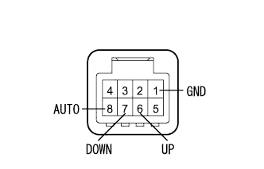
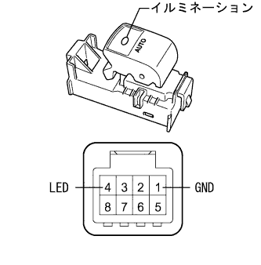

Power Window Regulator Switch Assembly RR Inspection |
| 1. Inspect Power Window Regulator Switch Assembly RR |
 |
Using SST (Toyota electrical tester), measure the resistance between the connector terminals.
| Tester Connection (Terminal Symbol) | Condition | Standard |
|---|---|---|
| 6(UP) - 1(GND) | UP | Below 1 Ω |
| 7(DOWN) - 1(GND) | DOWN | Below 1 Ω |
| 8(AUTO) - 1(GND) | AUTO DOWN AUTO UP | Below 1 Ω |
Illumination (LED) Inspection
 |
Illumination (LED) Lighting Inspection
Check that the illumination (LED) in the rear power window regulator switch assembly illuminates when battery positive is connected to connector 4 (LED) and battery negative is connected to 1 (GND).
| Tester Connection (Terminal Symbol) | Specified Condition |
|---|---|
| 4(LED) - 1(GND) | Comes on |